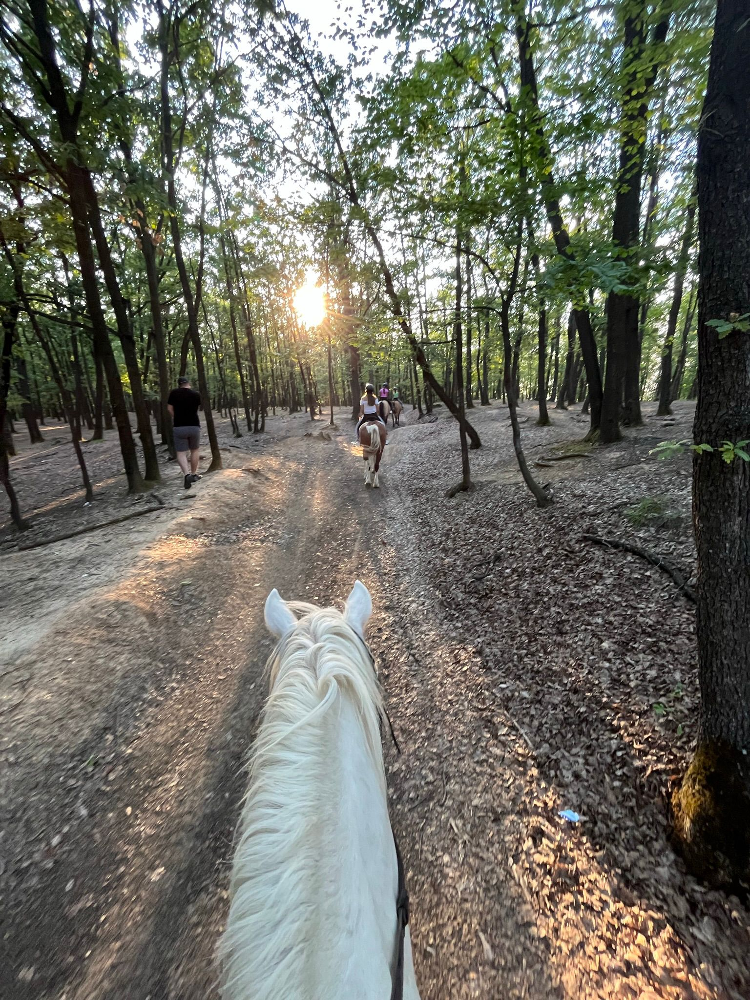
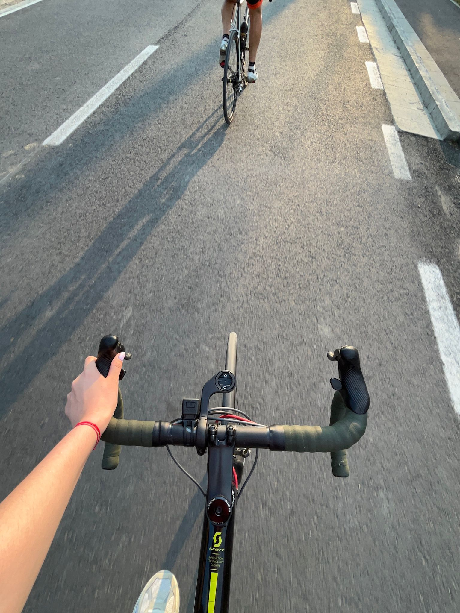
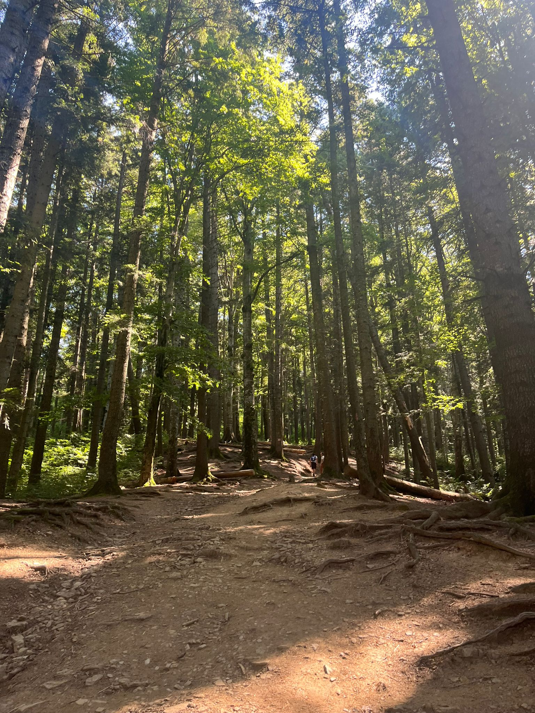
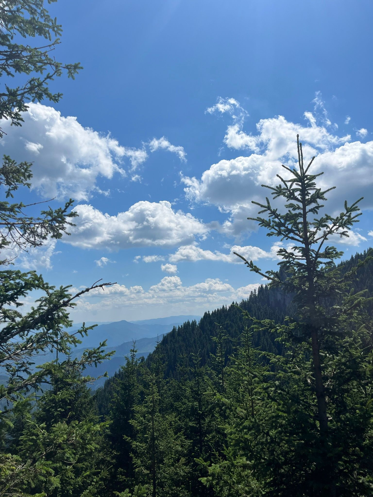
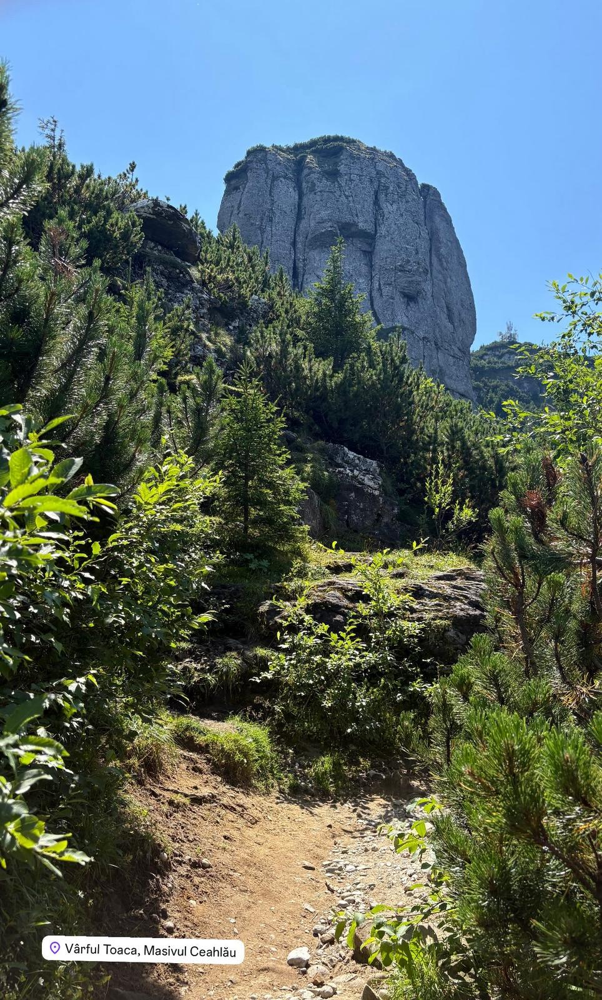
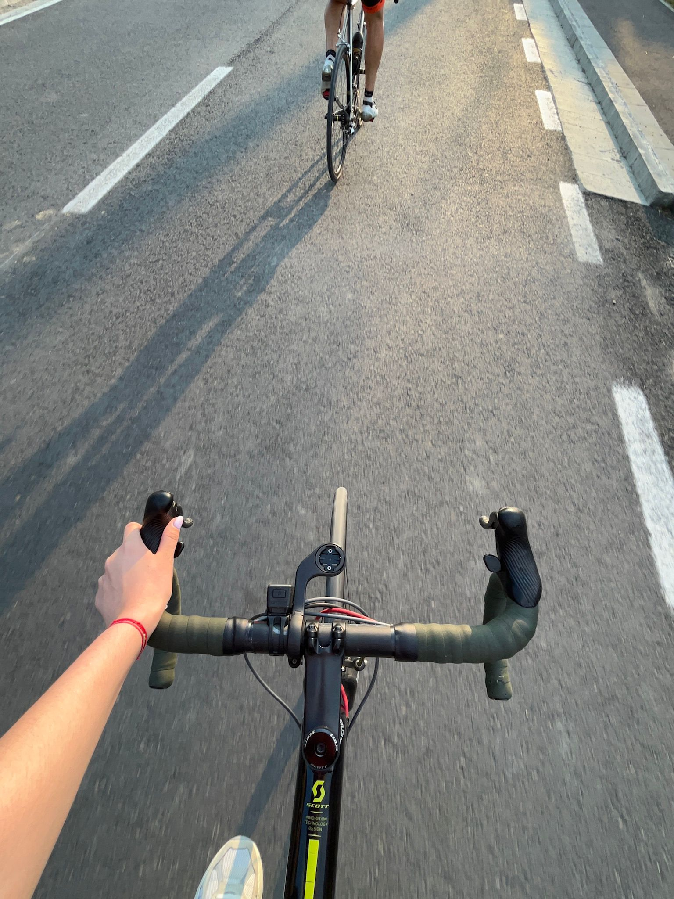
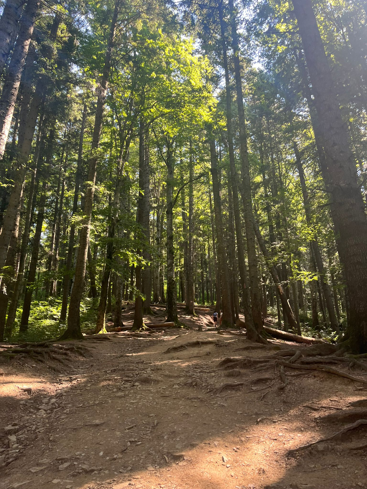
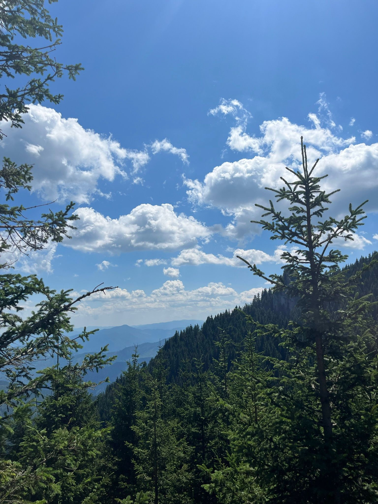
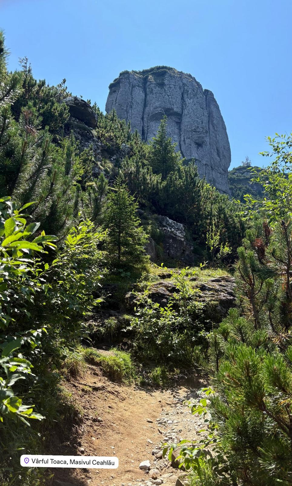

Norocul meu este că se completează una pe cealaltă iar atunci când ies să mă plimb, să fac drumeții sau să merg cu bicicleta pot face o poză pe care o pot pune în portofoliu. Cea mai impresionantă drumeție din ultimul an a fost pe Vârful Toaca, fiind și cel mai înalt vârf pe care am urcat. Traseul parcurs a durat aproximativ 6 ore. Natura este fantastică, iar peisajele sunt un cadru perfect de pozat.
 






